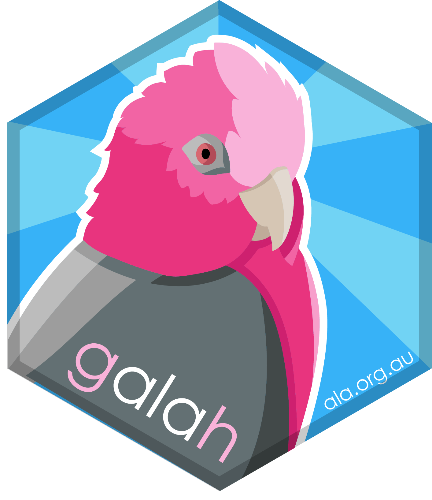
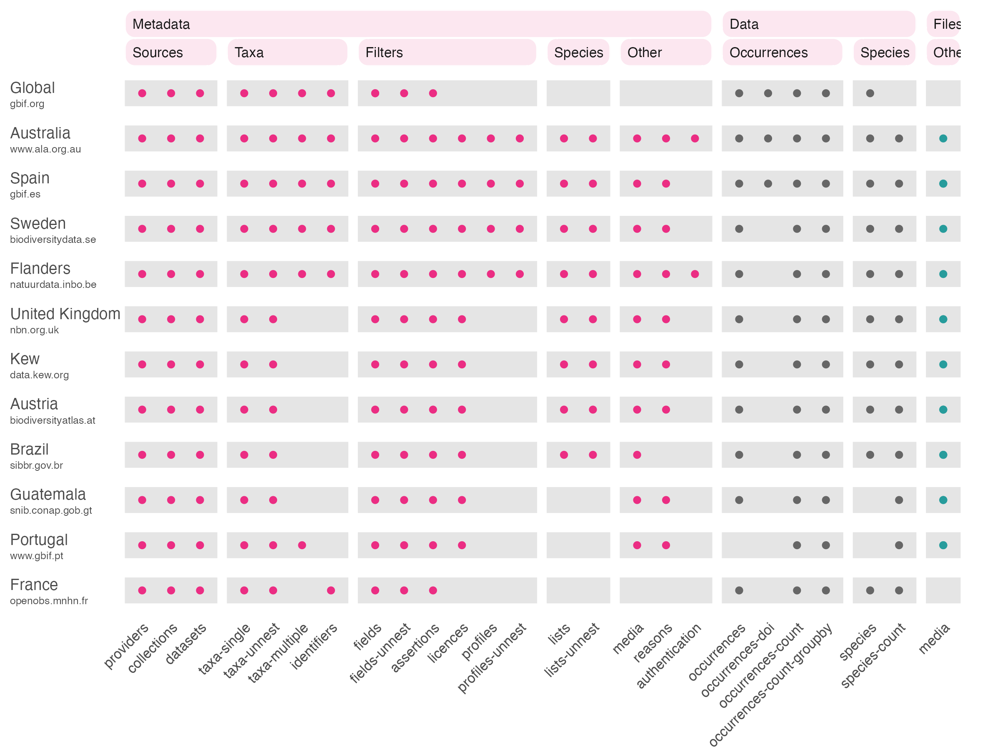

Quick start guide
Martin Westgate & Dax Kellie
2026-09-16
Source:vignettes/quick_start_guide.Rmd
quick_start_guide.Rmdgalah is an R interface to biodiversity data hosted by
the Global Biodiversity Information Facility (GBIF) and its subsidiary node
organisations. GBIF and its partner nodes collate and store observations
of individual life forms using the ‘Darwin Core’ data standard.
Installation
To install from CRAN:
install.packages("galah")Or install the development version from GitHub:
install.packages("remotes")
remotes::install_github("AtlasOfLivingAustralia/galah")Load the package
Getting data
galah is a dplyr extension package; rather
than using pipes to amend a tibble in your workspace, you
amend a query, which is then sent to your chosen organisation. These
pipes differ from traditional syntax in two ways:
- they begin with a function - usually
galah_call()- instead of atibble - they end with one of
dplyr’s evaluation functions, usuallycollect()
So an example query might be to find the number of records:
galah_call() |> # open a pipe
count() |> # count the number of rows
collect() # retrieve query from the server## # A tibble: 1 × 1
## count
## <int>
## 1 184796858By default, queries are sent to the Atlas of Living Australia, but
this can be changed using the from argument:
galah_call(from = "Spain") |>
count() |>
collect()## # A tibble: 1 × 1
## count
## <int>
## 1 59852882The from argument accepts the acronym,
region, or institution fields from
show_all(atlases). The full list of supported queries by
organisation is as follows:

Figure 1: Organisations (rows) and APIs (columns) supported by galah
Filtering
You can pass taxonomic filters to your query with
identify():
galah_call() |>
identify("Eolophus roseicapilla") |>
count() |>
collect()## # A tibble: 1 × 1
## count
## <int>
## 1 1593848To choose records using non-taxonomic criteria, you’ll need to use
filter(). This reqires that you find out:
- what fields (columns) are present in the dataset you are searching
- what values exist for those fields
You can answer the first question with describe():
galah_call() |>
describe() |>
collect()## # A tibble: 582 × 3
## id description data_type
## <chr> <chr> <chr>
## 1 acceptedNameUsage Accepted name string
## 2 acceptedNameUsageID Accepted name string
## 3 accessRights Access rights string
## 4 annotationsDoi <NA> string
## 5 annotationsUid Referenced by publication string
## 6 assertionUserId Assertions by user string
## 7 assertions Record issues string
## 8 assertionsCount <NA> int
## 9 associatedMedia Associated Media string
## 10 associatedOccurrences Associated Occurrences string
## # ℹ 572 more rowsOnce you find a variable you are interested in, see what values it
contains using distinct():
galah_call() |>
distinct(basisOfRecord) |>
collect()## # A tibble: 9 × 1
## basisOfRecord
## <chr>
## 1 HUMAN_OBSERVATION
## 2 PRESERVED_SPECIMEN
## 3 OCCURRENCE
## 4 OBSERVATION
## 5 MACHINE_OBSERVATION
## 6 MATERIAL_SAMPLE
## 7 LIVING_SPECIMEN
## 8 FOSSIL_SPECIMEN
## 9 MATERIAL_CITATIONThen you can combine these within a filter() query:
galah_call() |>
filter(basisOfRecord == "PRESERVED_SPECIMEN") |>
count() |>
collect()## # A tibble: 1 × 1
## count
## <int>
## 1 18419249These functions can be combined in a number of ways, for example to learn how many species from the genus ‘Crinia’ have records from each country with records in the ALA:
galah_call() |>
identify("Crinia") |> # filters by taxonomic names
group_by(country) |> # grouping variable
distinct(species) |> # keep only unique values
count() |>
collect()## # A tibble: 5 × 2
## country count
## <chr> <int>
## 1 Australia 17
## 2 Papua New Guinea 2
## 3 New Zealand 1
## 4 Indonesia 0
## 5 Solomon Islands 1You can glimpse() a data download before you run it, to
check all the data you need is included:
galah_call() |>
identify("Eolophus roseicapilla") |>
filter(year == 2010) |>
glimpse() |>
collect()## Rows: 26,430
## Columns: 8
## $ taxonConceptID <chr> "https://biodiversity.org.au/afd/taxa/9b4ad548-8bb3-486a-ab0a-905506c463ea", "https://biodiversity.org.au/afd/taxa/9b4ad548-8bb3-486a-ab0a-905506c463ea", "https://biodiversity.org.au/afd/taxa/a38ac5ac-3049-4fde-8391-faf8bf7aeb7f"
## $ eventDate <dbl> 1.278833e+12, 1.286170e+12, 1.292803e+12
## $ scientificName <chr> "Eolophus roseicapilla", "Eolophus roseicapilla", "Eolophus roseicapilla albiceps"
## $ decimalLatitude <dbl> -27.57463, -16.06593, -35.88444
## $ decimalLongitude <dbl> 153.4350, 136.3067, 145.9089
## $ basisOfRecord <chr> "HUMAN_OBSERVATION", "HUMAN_OBSERVATION", "HUMAN_OBSERVATION"
## $ dataResourceName <chr> "eBird Australia", "eBird Australia", "BirdLife Australia, Birdata"
## $ otherProperties <list> ["PRESENT"], ["PRESENT"], ["PRESENT"]And, once satisfied that your parameters are correct, download the records themselves:
galah_call() |>
authenticate(email = "registered_email@wherever.com") |>
identify("Eolophus roseicapilla") |>
filter(year == 2010) |>
select(eventDate, decimalLatitude, species) |>
collect()## Request for 26430 occurrences placed in queue.## Current queue length: 1## --##
ℹ Downloading##
✔ Downloading [253ms]## # A tibble: 26,430 × 3
## eventDate decimalLatitude species
## <dttm> <dbl> <chr>
## 1 NA -37.1 Eolophus roseicapilla
## 2 NA -37.0 Eolophus roseicapilla
## 3 NA -37.1 Eolophus roseicapilla
## 4 NA -37.1 Eolophus roseicapilla
## 5 NA -37.2 Eolophus roseicapilla
## 6 NA -37.0 Eolophus roseicapilla
## 7 NA -37.0 Eolophus roseicapilla
## 8 NA -37.0 Eolophus roseicapilla
## 9 NA -37.0 Eolophus roseicapilla
## 10 NA -37.1 Eolophus roseicapilla
## # ℹ 26,420 more rowsArchitecture
This works because many of the functions in dplyr are
“generic”, meaning it is possible to write extensions that apply them to
new object classes. In our case, request_data() creates a
new object class called a data_request for which we have
written new extensions. This means that galah will not interfere with
your use of filter() and friends on your tibbles. Supported
dplyr verbs that modify queries are as follows:
arrange.data_request()count.data_request()distinct.data_request()filter.data_request()glimpse.data_request()group_by.data_request()select.data_request()slice_head.data_request()
Additional verbs are:
It is good practice to download your data in as few steps as possible, to minimize impacts on the server, and to ensure you can get a single DOI for your data. See the download data reproducibly vignette for details.
Wrapper functions
While dplyr syntax is very flexible, there are cases
where it is easier to simply say the sort of data you want, rather than
create a database query to implement it. For this reason, several common
use cases have their own wrapper functions.
The atlas_ family of functions act like
collect(), but enforce a particular type of data to be
returned, such as record counts:
galah_call() |>
filter(year == 2025) |>
atlas_counts() # note no need for a `count()` function## # A tibble: 1 × 1
## count
## <int>
## 1 10781991Or occurrences:
galah_call() |>
identify("Eolophus roseicapilla") |>
filter(year == 2000,
cl22 == "Australian Capital Territory") |>
atlas_occurrences() |>
print(n = 6)## -----## # A tibble: 2,318 × 9
## recordID scientificName taxonConceptID decimalLatitude decimalLongitude eventDate basisOfRecord occurrenceStatus dataResourceName
## <chr> <chr> <chr> <dbl> <dbl> <dttm> <chr> <chr> <chr>
## 1 0026d29f-b6ab-4a1d-9c57-6ee12cfde3a0 Eolophus roseicapilla https://biodiversity.org.au/afd/taxa/9b4ad548-8bb3-486a-ab0a-905506c463ea -35.4 149. 2000-08-07 00:00:00 HUMAN_OBSERVATION PRESENT Garden Bird Surveys
## 2 00a62ee0-1e08-4114-b0d8-9b7905472d53 Eolophus roseicapilla https://biodiversity.org.au/afd/taxa/9b4ad548-8bb3-486a-ab0a-905506c463ea -35.2 149. 2000-01-29 00:00:00 HUMAN_OBSERVATION PRESENT Garden Bird Surveys
## 3 00ab2f4d-326f-4b01-9a8a-1a10c1f77e3c Eolophus roseicapilla https://biodiversity.org.au/afd/taxa/9b4ad548-8bb3-486a-ab0a-905506c463ea -35.4 149. 2000-09-25 00:00:00 HUMAN_OBSERVATION PRESENT Garden Bird Surveys
## 4 00b6c8ec-e7b9-4d9f-9638-d962b1b4acfa Eolophus roseicapilla https://biodiversity.org.au/afd/taxa/9b4ad548-8bb3-486a-ab0a-905506c463ea -35.2 149. 2000-02-05 00:00:00 HUMAN_OBSERVATION PRESENT Garden Bird Surveys
## 5 00e36517-6518-42d5-8b69-90c526095fef Eolophus roseicapilla https://biodiversity.org.au/afd/taxa/9b4ad548-8bb3-486a-ab0a-905506c463ea -35.4 149. 2000-01-01 00:00:00 HUMAN_OBSERVATION PRESENT Garden Bird Surveys
## 6 010b463f-d34f-45ec-8733-91f676a299d8 Eolophus roseicapilla https://biodiversity.org.au/afd/taxa/9b4ad548-8bb3-486a-ab0a-905506c463ea -35.2 149. 2000-03-12 00:00:00 HUMAN_OBSERVATION PRESENT Garden Bird Surveys
## # ℹ 2,312 more rowsatlas_species() replaces the need for
distinct() call, while atlas_media() is a
shortcut to a more complex workflow that incorporates both data and
metadata calls. Finally, metadata calls can be made more efficiently
using the show_all() and show_values()
functions. These take the same arguments as the type
argument in request_metadata(), but us non-standard
evaluation, so they don’t require quotes. They are also evaluated
immediately rather than lazily:
show_all(fields)## # A tibble: 582 × 3
## id description type
## <chr> <chr> <chr>
## 1 acceptedNameUsage Accepted name fields
## 2 acceptedNameUsageID Accepted name fields
## 3 accessRights Access rights fields
## 4 annotationsDoi <NA> fields
## 5 annotationsUid Referenced by publication fields
## 6 assertionUserId Assertions by user fields
## 7 assertions Record issues fields
## 8 assertionsCount <NA> fields
## 9 associatedMedia Associated Media fields
## 10 associatedOccurrences Associated Occurrences fields
## # ℹ 572 more rowsYou can check the look up information vignette for further details.